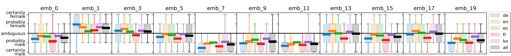
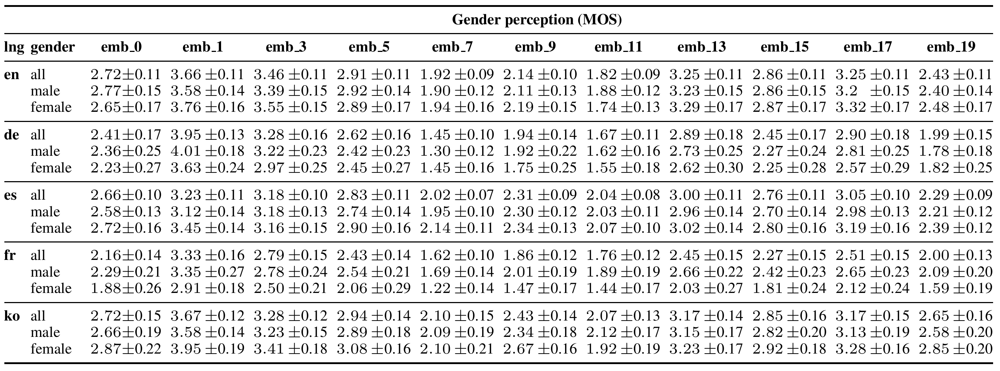

⋆ Innoetics, Samsung Electronics, Greece
† Mobile eXperience Business, Samsung Electronics, Republic of Korea
The gender of any voice user interface is a key element of its perceived identity. Recently, there has been increasing interest in interfaces where the gender is ambiguous rather than clearly identifying as female or male. This work addresses the task of generating novel gender-ambiguous TTS voices in a multi-speaker, multilingual setting. This is accomplished by efficiently sampling from a latent speaker embedding space using a proposed gender-aware method. Extensive objective and subjective evaluations clearly indicate that this method is able to efficiently generate a range of novel, diverse voices that are consistent and perceived as more gender-ambiguous than a baseline voice across all the languages examined. Interestingly, the gender perception is found to be robust across two demographic factors of the listeners: native language and gender. To our knowledge, this is the first systematic and validated approach that can reliably generate a variety of gender-ambiguous voices.
Our experiments with d-vectors demonstrate that the generated voices diplay gender ambiguity, diversity, as well as consistency for each embedding across samples and languages.
Our subjective evaluation of gender perception showed that 5 generated voices are rated as more gender-ambiguous (embeddings 13, 17, 5, 15, 3) than our baseline (emb_0), which is a simple averaging of the embeddings of all ground truth speakers. Below we show a box plot of cross-lingual MOS results of gender perception with 95% confidence intervals. Systems closer to the horizontal black line are perceived as more gender ambiguous.
The complete cross-lingual results with listener demographics are reported in the table. Systems rated closer to 3 are perceived as more gender ambiguous. The male speakers samples have been rated as 1, while the female samples as 5.

The relative ordering of generated voices from male to female is consistent across languages and listeners' gender, with few differences that are not statistically significant:
The most ambiguous voices display similar or better naturalness compared to the baseline. Below are reported the naturalness MOS evaluation results with 95% confidece intervals: